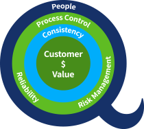
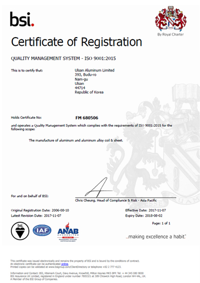
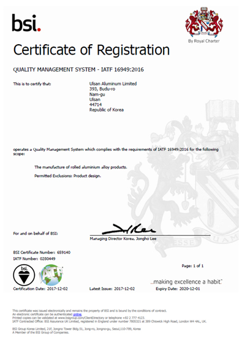

@@include('./include/header.html')
기술·품질 경영
Technology & Quality Management
기술·품질 경영
인증 획득
울산알루미늄은 IATF 16949 자동차산업 품질경영시스템 인증 획득으로 급변하는 자동차 분야의 기술 트렌드에 발맞춰 고객사의 요구사항을 충족하고 제품 품질의 지속적 개선을 효과적으로 실현하는 국제적인 수준의 프로세스와 관리기준을 갖게 되었습니다.
- 1997.12ISO 9001 QMS by KSA
- 2002.12ISO 9001 QMS by BSI
- 2003.06Integrated EHSQ Certificate by BSI
- 2005.12TS 16949 Certificate for Universal Cast Process by BSI
- 2017.12IATF 16949 Certificate for Automotive Rolling process Keeping Certificates Continue

-

품질경영시스템 ISO 9001:2015
-

국제자동차산업표준기구 IATF 16949
@@include('./include/footer.html')